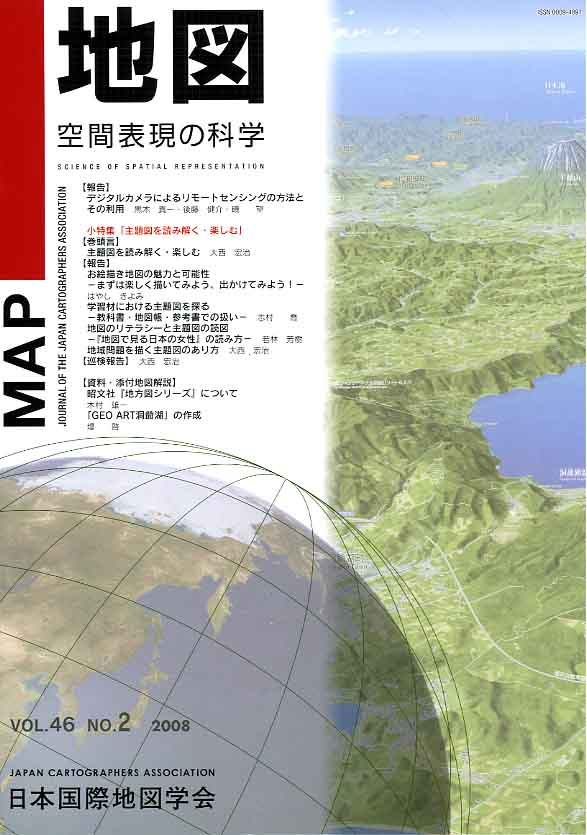
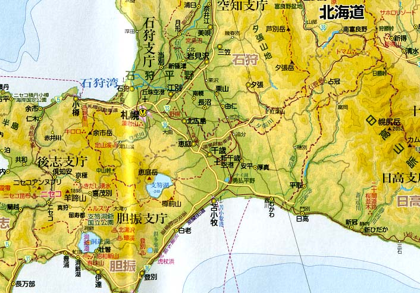

≪No.46 No.2 添付地図−抜粋≫

本図を許可なく複製・利用することを禁止します。
| 最 新 号 | バックナンバー | 添付地図目録 | 投 稿 規 程 |
Vol.46 No.2 （通巻１８２号） ２００８年
| 【報告】 | デジタルカメラによるリモートセンシングの方法とその利用 | 黒木貴一・後藤健介・磯 望 |
| キーワード：地理情報システム、デジタルカメラ、リモートセンシング、反射率 | ||
| 小特集「主題図を読み解く・楽しむ」 | ||
| 【巻頭言】 | 主題図を読み解く・楽しむ | 大西宏治 |
| 【報告】 | お絵描き地図の魅力と可能性 −まずは楽しく描いてみよう，出かけてみよう！− | はやしきよみ |
| キーワード：お絵描き地図、地図作成、技術的・心理的障害の低減、地図の持つ可能性 | ||
| 学習材における主題図を探る −教科書・地図帳・参考書での扱い− | 志村 喬 | |
| 地図のリテラシーと主題図の読図 −『地図で見る日本の女性』の読み方− | 若林芳樹 | |
| キーワード：主題図、地図読図、リテラシー、ジェンダー | ||
| 地域問題を描く主題図のあり方 | 大西宏治 | |
| キーワード：主題図、地域問題、地域安全マップ、地図描画 | ||
| 【巡検報告】 | 地方大会（富山）巡検 −富山の過去と未来− | 大西宏治 |
| 【資料・添付地図解説】 | 昭文社『地方図シリーズ』について | 木村雄一 |
| キーワード：地方図、アナログ製作、市町村合併、ＳｉＭＡＰデータベース、出版物更新システム | ||
| 「GEO ART洞爺湖」の作成 | 堤 啓 | |
| 【ニュース】 | 月の地形図の作成 | 神谷 泉・荒木博志・祖父江真一 |
| 【書評・紹介】 | 川の地図辞典 | 谷岡誠一 |
| 日本列島の生い立ちを読む | 小白井亮一 | |
| 【特別会員のページ】 | 社団法人地図協会 | |
| 株式会社武揚堂 | ||
| 【学会記事】 | ||
| 【添付地図】 | 昭文社「地方図シリーズ」卓上版日本全図 | |
| GEO ART 洞爺湖 | ||
| 海上保安庁刊行日本近海海図索引図（平成20年3月現在） | ||
| 海上保安庁刊行航海用電子海図セル索引図（平成20年3月現在） | ||
| 国土地理院刊行地図一覧図（平成20年6月1日現在 一般図の部） | ||
|
≪No.46 No.2 表紙≫ |
|
|  |
|
|
|
≪No.46 No.2 添付地図−抜粋≫ |
| 
本図を許可なく複製・利用することを禁止します。
|